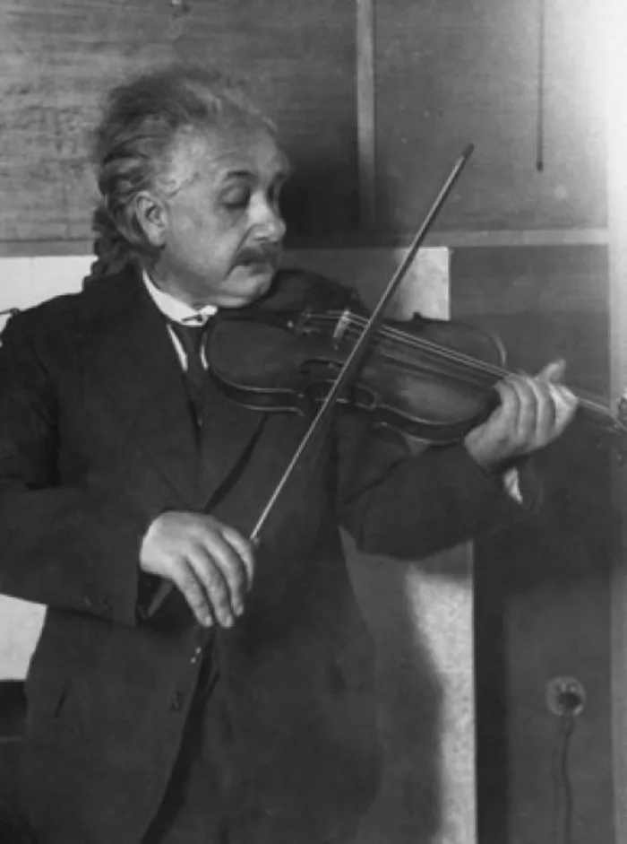

Master Card爱因斯坦的相对论之路

"一个新的想法突然出现了，而且在相当程度上是凭借直觉获知的，" 爱因斯坦曾经这样说，但他又补充道，"但直觉只不过来源于早先的思想历程。"
爱因斯坦对狭义相对论的发现与一种直觉密不可分，它建立在十年的思想历程和个人体验之上。我认为最重要的因素包括：
- 深刻的理解：他对理论物理学有着深刻的领会。
- 思想实验的能力：在阿劳上学时培养起来的构造思想实验的能力。
- 哲学基础：他从休谟和马赫那里获得了一种怀疑论，这种针对无法观察之物的怀疑，与其天生质疑权威的反叛倾向相结合。
- 技术背景：在专利局（伯尔尼电报大楼）处理新式校表方法的申请，以及帮助舅舅改进发电机，增强了他想象物理场景以及切中概念核心的能力。他的朋友贝索也在专利局，常与他一同探讨问题。
当然，对这些影响的排序只是一种主观的判断。毕竟，甚至连爱因斯坦本人都不可能说清楚具体过程是这样的。"很难说我是如何提出相对论的，这背后有太多复杂的因素在激发我的思想。"
不过有一点我们还是比较清楚的，那就是爱因斯坦的主要出发点。他多次声称，他的相对论之路始于 16 岁的一个思想实验，即以光速追赶一束光会怎么样？ 他说，这导致了一个悖论，在接下来的十年里一直困扰着他：
如果以光速 c 追赶光，观察者应当看到一束在空间中震荡而停滞不前的电磁场。但无论是经验还是麦克斯韦方程组，似乎都不允许这种情况发生。他直觉地感到，对于匀速运动的观察者来说，一切物理定律应当与静止观察者所见的一致。 这个悖论蕴含了狭义相对论的萌芽。
爱因斯坦感到麦克斯韦方程组中的光速不变性与牛顿力学定律之间存在着冲突。所有这些都使他精神紧张，坐卧不安。
"当狭义相对论最早开始在我头脑中萌芽时，某种冲突往往会一股脑地袭来，"他后来回忆说，"我年轻的时候，因思绪纷乱而在数周之内不去想它是常有的事。"
关于科学研究的方法，爱因斯坦在归纳与演绎之间有着明确的偏爱：
- 归纳法：对实验结果进行分析，寻找解释它们的理论。
- 演绎法：从若干神圣而优雅的原理和假设出发，导出推论。
任何科学家都在不同程度上同时使用这两种方法。凭借着对于实验结果的良好直觉，爱因斯坦得出了若干基本原理，从而发现某些关节点，能够基于它们构造理论。不过，他所注重的主要是演绎方法。
在那篇关于布朗运动的论文中，他就出人意料地贬低实验结果在理论演绎中所扮演的角色，他说："在我得知这一实验及其结果之前，我就确信相对性原理是有效的。"
的确，在他 1905 年的三篇划时代论文中，每一篇的开头谈论的都是由理论之间的协调所导致的疑难，而非未经解释的实验数据。 然后他假设了一些基本原理，将实验数据的作用减少到最低限度。
在 1919 年《物理学中的归纳与演绎》一文中，他指出：虽然人们认为科学源于归纳，但真正伟大的进展乃是源于一种截然相反的方式——通过直觉把握复杂事实的本质，提出假设性的基本定律，再由此导出结论。
爱因斯坦对演绎法的欣赏与日俱增。他在晚年声称："我们钻研得越是深入，我们的理论变得越是广泛，用来确定这些理论所需要的经验知识就越少。"
早在 1905 年尝试解释电动力学时，他便已从归纳转向演绎。他曾感叹，在长期的尝试中，他对通过已知事实构造定律的可能性感到绝望："带着这种绝望，我尝试的时间越长，也就越发地确信：只有发现一个普遍的形式原理，才能使我们获得可靠的结果。"
爱因斯坦在与一个朋友谈话时，做出了物理学史上极具想象力的一次优雅飞跃。
爱因斯坦后来回忆说，那一天伯尔尼天气晴好，他去拜访自己最好的朋友贝索。爱因斯坦在苏黎世学习时结识了这位有些心不在焉的优秀工程师。后来，他也来到瑞士专利局与爱因斯坦共事。他们经常一起步行去上班，期间，爱因斯坦向贝索谈起了这个一直令他百思不得其解的困难。
"我打算放弃了。" 爱因斯坦有一次说。但就在讨论过程中，爱因斯坦回忆说："我忽然想出了问题的解决办法。"
第二天见到贝索时，爱因斯坦极为兴奋，他顾不上问候，就开门见山地说："感谢你，我已经完全解决了这个问题。"
在这一灵光闪现之后，仅仅五个星期，爱因斯坦就寄出了那篇著名的论文《论动体的电动力学》。他没有引用其他文献，也没有提到他人的工作， 只是在文章的结尾处写道："我要声明，在研究这里所讨论的问题时，我曾得到我的朋友和同事贝索始终如一的支持，感谢他提出的一些宝贵建议。"
Notes云不见读后记
昨天在翻阅《爱因斯坦传》，看到上述这个片段时非常激动。这简直就是完美的「最小阻力之路」的结构，以及创作过程中潜意识体现的完美范例。
不知道你有没有看出一些端倪？在我的眼中，我看到了非常清晰的「最小阻力之路」结构。
首先，让我们回忆一下，最小阻力之路的结构需要三个要素：
- 有一个最大愿景
- 有现状
- 愿景和现状之间产生结构性张力，让你不断地从现状走向你的愿景
在这里，爱因斯坦所表述的最大愿景，就是他 16 岁时做的那个思想实验：如果以光速追赶一束光，会怎么样？这个悖论在接下来的十年里一直困扰着他。
而这里的结构性张力，体现在这些困惑使他精神紧张、坐卧不安，各种冲突往往会一股脑地袭来。
同时，这里也有潜意识在工作。 他回忆道："我年轻的时候，因思绪纷飞而在数周之内不去想它，是常有的事。"
以及最后思想的飞跃。爱因斯坦有一次说，他本来打算放弃了，但就在和朋友讨论的过程中，他回忆道："我忽然想到了问题的解决办法。"这完全是潜意识在工作的体现，很多结果都在不经意间出现。
此外，还包括他对归纳法的排斥，以及对演绎法的推崇和偏爱。他的每一篇论文开头，都是由理论之间的不协调所导致的疑难，而不是某些未经解释的实验数据。这种由理论、由直觉产生的真实困惑，导致他去研究这个问题，这就是一股推着你往愿景走的结构性张力。
这就是我们经常在写作里所说的：
- 你的最大困惑是什么？让这个困惑推着你去找到可能的答案。
- 那个让你坐立不安的问题是什么？
- 是什么总是出现在你身边困扰着你？
- 你渴望解决它吗？
研究到这里，我觉得《最小阻力之路》那优美而简洁的结构，让我可以直接去质疑所谓的「21 天习惯养成法」。那套方法完全是在扯淡。这就是为什么那种习惯养成法往往只在一开始非常奏效，可一旦停下来，就彻底停滞了。
今日开喷指引卡
打开录音，可以试着说：
1、你自己的「追光实验」
有没有一个问题、一个悖论、一件事情里的不协调之处，反复回来找你，让你精神紧张、坐卧不安？不需要伟大，也不需要十年——它可以是从上周才开始困扰你的。说说它是什么，它第一次出现是什么时候。
2、「我打算放弃了」，然后呢
爱因斯坦的转折不是发生在独自苦思时，而是发生在跟贝索一起走路聊天的路上。有没有一件事，你想过「我打算放弃了」，却在说给别人听（或者，就是此刻对着录音说出来）的过程中，忽然松动了一点？如果还没发生，就说说那件卡住的事，此刻正卡在哪里。
现状是：还没有喷。
开录之后，不用暂停，说够15分钟，沉默、语气词也算。
说完可以来群里分享：「Day 4 ✅ + 你的那个「追光实验」是什么」。
—— 云不见 · 2026.07.10